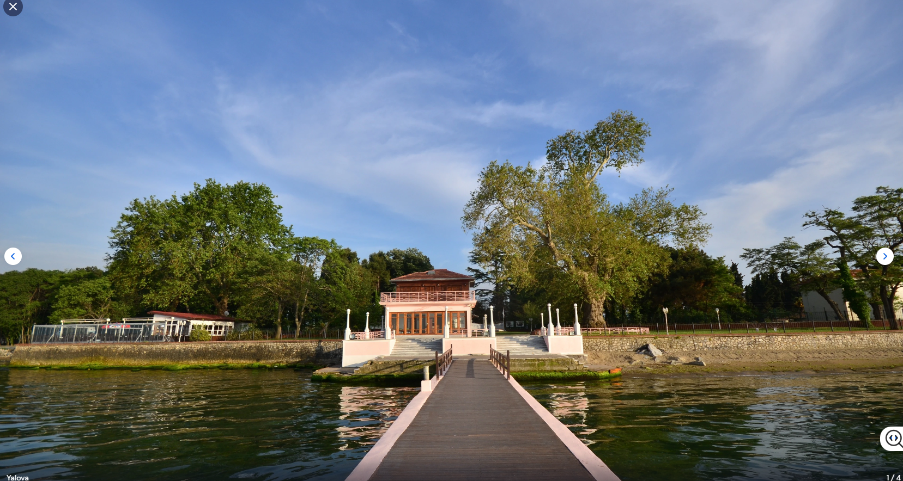
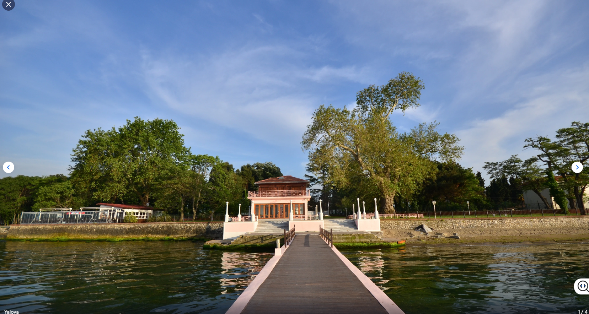

Welcome to the Heart of Turkish Beauty
 Turkey, with its enchanting nature, diverse climate, and ancient history, is considered one of the world’s leading tourism destinations. ...
The land of the flowers
The land of the flowers
 Turkey, with its enchanting nature, diverse climate, and ancient history, is considered one of the world’s leading tourism destinations. ...